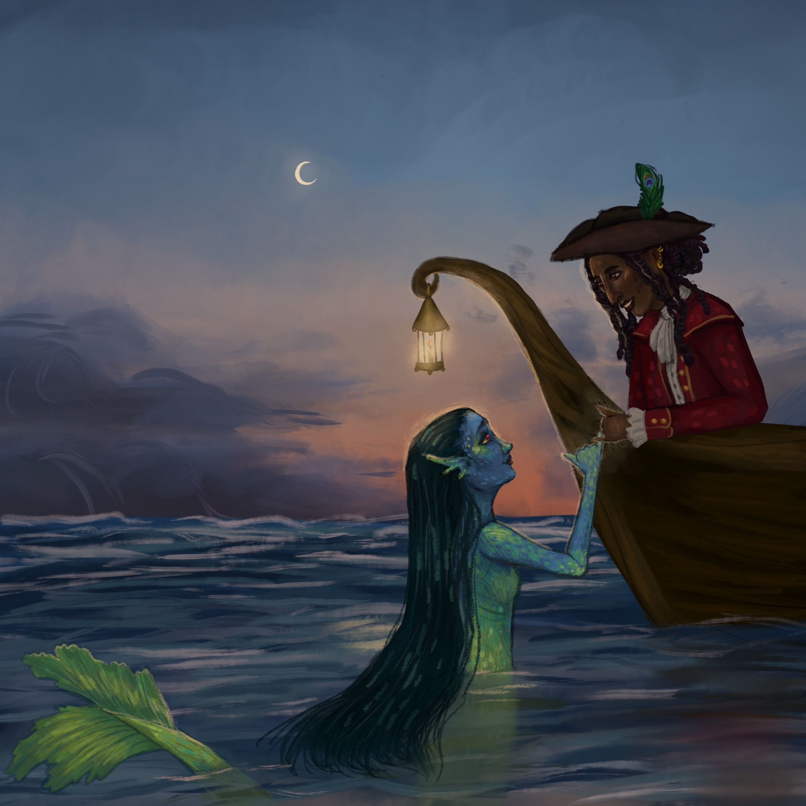

Thick as Thieves, 2022
This illustration was completed for a class assignment where we had to illustrate the
meaning behind selected proverbs in a creative way. For this illustration, I chose to
illustrate the proverb "thick as thieves", meaning very close friends who share secrets. I
chose to represent the proverb as a pirate and mermaid being friends. I interpreted it as
two friends doing a pinky promise to add to the secretive part of the proverb and show they
are close, and one is a pirate to kind of allude to the thieves part. Created using the app
Procreate.